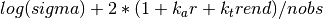
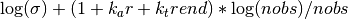

statsmodels.tsa.ar_model.ARResults¶
-
class
statsmodels.tsa.ar_model.ARResults(model, params, normalized_cov_params=None, scale=1.0)[source]¶ Class to hold results from fitting an AR model.
Parameters: model : AR Model instance
Reference to the model that is fit.
params : array
The fitted parameters from the AR Model.
normalized_cov_params : array
inv(dot(X.T,X)) where X is the lagged values.
scale : float, optional
An estimate of the scale of the model.
Returns: Attributes
aic : float
Akaike Information Criterion using Lutkephol’s definition. 
bic : float
Bayes Information Criterion 
bse : array
The standard errors of the estimated parameters. If method is ‘cmle’, then the standard errors that are returned are the OLS standard errors of the coefficients. If the method is ‘mle’ then they are computed using the numerical Hessian.
fittedvalues : array
The in-sample predicted values of the fitted AR model. The k_ar initial values are computed via the Kalman Filter if the model is fit by mle.
fpe : float
Final prediction error using Lutkepohl’s definition ((n_totobs+k_trend)/(n_totobs-k_ar-k_trend))*sigma
hqic : float
Hannan-Quinn Information Criterion.
k_ar : float
Lag length. Sometimes used as p in the docs.
k_trend : float
The number of trend terms included. ‘nc’=0, ‘c’=1.
llf : float
The loglikelihood of the model evaluated at params. See AR.loglike
model : AR model instance
A reference to the fitted AR model.
nobs : float
The number of available observations nobs - k_ar
n_totobs : float
The number of total observations in endog. Sometimes n in the docs.
params : array
The fitted parameters of the model.
pvalues : array
The p values associated with the standard errors.
resid : array
The residuals of the model. If the model is fit by ‘mle’ then the pre-sample residuals are calculated using fittedvalues from the Kalman Filter.
roots : array
The roots of the AR process are the solution to (1 - arparams[0]*z - arparams[1]*z**2 -...- arparams[p-1]*z**k_ar) = 0 Stability requires that the roots in modulus lie outside the unit circle.
scale : float
Same as sigma2
sigma2 : float
The variance of the innovations (residuals).
trendorder : int
The polynomial order of the trend. ‘nc’ = None, ‘c’ or ‘t’ = 0, ‘ct’ = 1, etc.
tvalues : array
The t-values associated with params.
Methods
aic()bic()bse()fittedvalues()fpe()hqic()predict([start, end, dynamic])Returns in-sample and out-of-sample prediction. pvalues()resid()roots()scale()sigma2()Attributes
extra_docpreddocuse_t